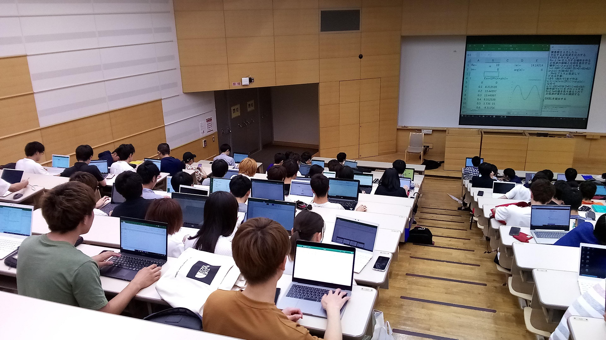

ノートPCのご購入について
情報化の波は急速に押し寄せ，今や情報環境を使いこなさなければ就職活動にも支障がでるまでになっています。福岡大学ではこうした社会の変化に対応して，学生の皆様の学修や研究活動に情報ネットワークやPCを活用できるよう学内の情報環境の整備に努めており，学生は在学期間中Microsoft
Officeとコンピュータウイルス対策ソフトを無償で利用できるようになっています。
PCを使いこなせる能力は，多くの大学でPCの必携化が行われていることからも分かるように今や学部，学科を問わず大学生に求められる能力の一つになっていますが，特に，電子情報工学科の卒業生にとってPCは仕事をする上で必須のツールになっており，他の学部，学科の卒業生以上の能力を期待されています。このような状況を踏まえ，本学電子情報工学科では多くの授業で，レポートの作成や自宅での予習・復習などだけではなく，専門科目の理解を助ける教材の利用などノートPCを積極的に活用し，学生の総合的な情報処理能力の向上を図っています。また，2020年4月からのコロナ禍は教育現場の変革をもたらし，講義のオンライン受講のみならず，学生個人ベースで行う多くの実験や演習が市販やフリー，さらには学科で内製したソフトウエアを用いて行うようになりました。そのために，皆様に自宅や大学などで利用できるノートPCのご購入をお願いする次第です。

自前のノートPCで演習をしている授業の例（コロナ禍以前の授業です）